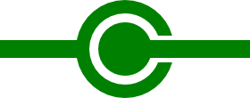

Test application cache - v.14
Image générique

Image pour le test connecté ou pas 
NC
Shopping list
- Tester l'appcache
- Sortir une image de l'appcache pour tester si on est connecté ou pas (network ? fallback ?)
- Tester le navigator.online
- Enregistrer un formulaire sur le serveur si online, dans le localstorage si offline.